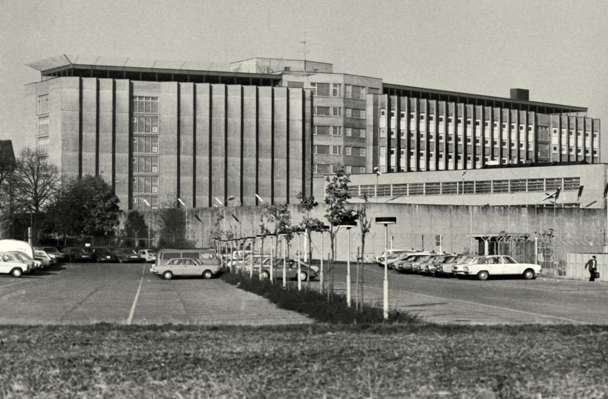

Todesnacht von Stammheim
Als am Morgen des 18.Oktobers um 7.41 Uhr die Zelle von Jan-Karl Raspe geöffnet wurde, fanden die JVA-Beamten ihn mit blutigem Gesicht auf seinem Bett sitzen, in der rechten Hand eine Pistole; ein Kopfschuss. Raspe wird ins Krankenhaus gebracht.
Auch Baaders und Ensslins Zellen wurden geöffnet, jedoch war bei ihnen keine Hilfe mehr möglich. Baader hatte sich ebenfalls erschossen und Ensslin sich am Gitter ihres Zellenfensters erhängt. Irmgard Möller wurde mit mehreren Stichverletzungen in der linken Brust aufgefunden. Raspe starb noch am selben Morgen im Krankenhaus. Das baden-württembergische Justizministerium teilte der DPA mit, dass sich Baader und Ensslin “am Dienstagmorgen in der JVA in Stammheim das Leben genommen” hatten. Ab da rankten sich viele Verschwörungstheorien vor allem um diese Nacht, aber auch generell über die Vorgänge in Stammheim und wie all das im “sichersten Gefängnis der Welt” passieren konnte. Auch die Frage “Selbstmord oder Mord?” ist bis heute nicht eindeutig geklärt.

Quellen:
AUST, Stefan. Der Baader Meinhof Komplex. Hamburg: 12017 (Neuauflage). S. 22 ff. Bildquelle: https://www.stuttgarter-zeitung.de/media.media.bbafac87-1eaf-400a-a401-e89b242eff2e.original1024.jpg